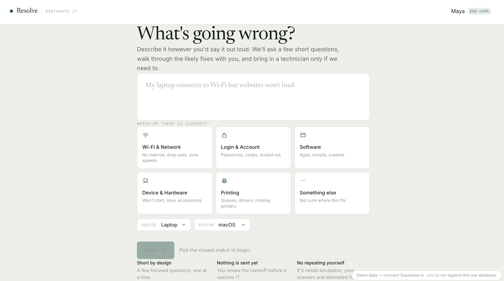
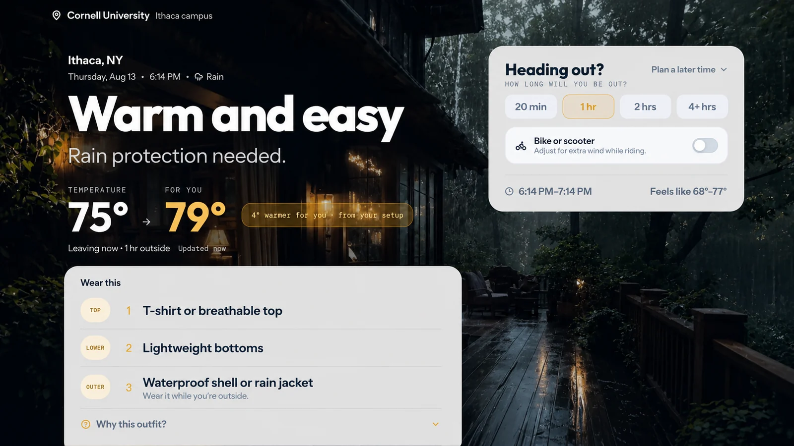

Selected work

Resolve
2026
Guided troubleshooting that turns vague IT problems into technician-ready support tickets.
Built after repeatedly seeing the same points of friction while helping people troubleshoot technology.
React · TypeScript · PostgreSQL · Supabase

Layer
2025
Personalized clothing recommendations built around weather, comfort, and outing context.
React · JavaScript · PostgreSQL · Supabase
Stellic Pathfinders Challenge
Bridge
Guided journeys for international students navigating unfamiliar university and administrative processes.
React · TypeScript · Vite
Machine learning / NLP
AI Tweet Detection
Compared BERT, Random Forest, and Logistic Regression for classifying human- and AI-generated tweets.
Python · pandas · scikit-learn
More work
Future Civilisations
Built and maintain a live conference website as event requirements evolve.
Color Model Converter
A Python tool for converting and synchronizing RGB, CMYK, and HSV values.
Image Editor
A Python image editor with cumulative filters and pixel-level transformations.
Experience
Undergraduate Researcher
Aug 2026 — Present
Predictable Prose · Cornell University
Annotate and review detective-fiction passages for a study comparing how human readers and language models anticipate narrative turns.
IT Client Services Assistant
Jan 2026 — Present
Cornell SC Johnson College of Business
Support faculty and staff across hardware, software, accounts, connectivity, workstation deployment, and day-to-day troubleshooting.
Software Engineer Intern
May 2025 — Aug 2025
Donyma Steel Complex
Worked on React interfaces, reusable UI components, REST API integration, and frontend performance.
Web Lead & Financial Coordinator
Jan 2026 — Present
Future Civilisations Society
Build and maintain the conference website while coordinating changing event requirements and budgeting across teams.
Also
Cornell AI4ALL
Selected Participant · AI/ML Program
2026
Cornell Dining
Student Manager
Feb 2025 — Present
Programming Outreach
Volunteer Programming Instructor
May 2023 — Aug 2024
About
I’ve spent a lot of time helping people when something isn’t working: at an IT desk, while teaching, and in customer-facing jobs. That has made me notice the small points of friction that software often ignores.
I now work across the stack, from React interfaces to APIs, PostgreSQL, authentication, testing, and deployment.
Skills
- Languages
- Python · Java · JavaScript · TypeScript · SQL
- Frontend
- React · HTML · CSS · Vite
- Backend / Data
- PostgreSQL · Supabase · REST APIs · pandas
- Tools
- Git · GitHub Actions · Vitest · Jupyter